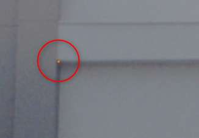
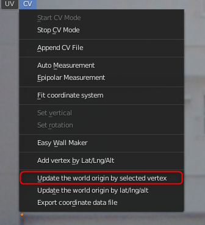
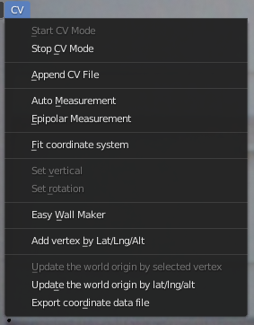
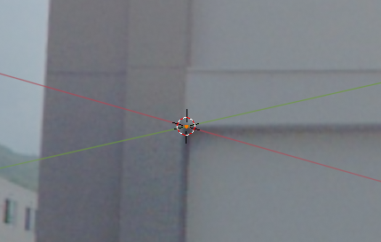

座標系関連機能¶
ここでは座標系関連の機能について説明します。
用語定義¶
まず、用語の整理と定義を行います。
「トランスフォームの座標系 (Transform Orientations) 」をグローバルにしたときに、アイテムタブのトランスフォームパネルに表示される座標をグローバル座標系と呼びます。
https://docs.blender.org/manual/en/2.83/editors/3dview/controls/orientation.html
CVタブの移動 (Translation) パネルに表示される座標系1をワールド座標系と呼びます。これは画面左下の「座標情報」に表示される座標と同じ座標系です。
CVCGModelerではどのような座標体系になっているか¶
グローバル座標系とワールド座標系の軸は同じ方向を向いています。
CVCGModelerでは原点（グローバル座標[0,0,0]）のワールド座標を保持しています。グローバル座標に原点座標を加算することによってワールド座標となります。原点のワールド座標はグローバル座標の桁落ちの影響が最小となるように決定されなければなりません。
また、原点のワールド座標はBlender機能によって出力されたモデルファイルを他のアプリケーションに読み込む際にも使用されます。
ワールド座標系の「原点」の更新¶
この「原点」を更新するために、ふたつの方法を用意しました。
- 頂点を選択して、その点を新たな原点とする
- 緯度・経度・高度を直接入力して、その点を新たな原点とする
頂点を選択して、その点を新たな原点とする¶
STEP 1¶
新たな原点としたい頂点を選択状態にします。

STEP 2¶
CVメニューから、Update the world origin by selected vertexを選択します。

Warning
頂点が選択状態でなければ機能は有効となりません。

結果¶
グローバル座標の軸を表示した状態だと、次のようになります。確かに、グローバル座標の原点が、選択した頂点となったことがわかります。

緯度・経度・高度を直接入力して、その点を新たな原点とする¶
STEP 1¶
CVメニューから、Update the world origin by selected vertexを選択します。
STEP 2¶
ダイアログに緯度・経度・経度を入力して、OKを選択します。
座標系データファイルのエクスポート¶
座標系に関する情報を記述したXMLファイルの出力が可能です。
CVメニューのExport coordinate data fileから行ってください。
XMLの例¶
<?xml version='1.0' encoding='utf-8'?>
<World CreationTime="2021-08-16T09:30:57.303447+00:00">
<Origin Epsg="32654">
<X>525200.0</X>
<Y>4765600.0</Y>
<Z>67.864</Z>
</Origin>
</World>
-
地球上のある3次元点を表すための投影座標系。現在、CVではUTM座標系か平面直角座標系を使用している。 ↩